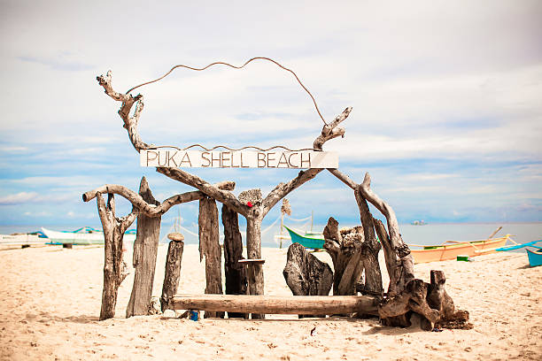
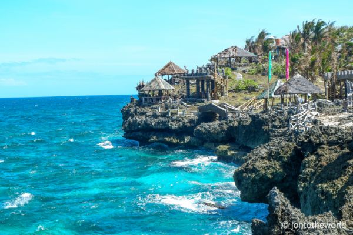
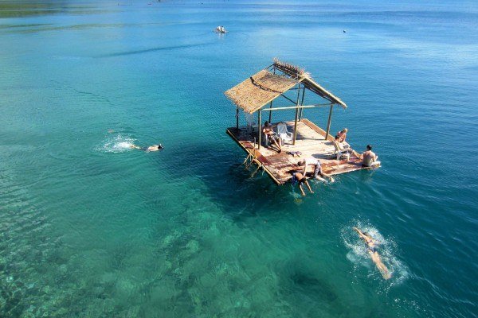

PUKA SHELL BEACH

CRYSTAL COVE

ARIEL'S POINT

MOUNT LUHO
Enjoy the wonderful island life in Palawan, one of the top tourist destinations in the Philippines and frequently rated as one of the world's top islands. It is a well-liked vacation spot renowned for its breathtaking natural beauty.
It features islands and beaches with white sand, crystal-clear oceans, an amazing variety of marine life, shipwrecks, imposing towering limestone cliffs, and a strong cultural heritage. This largest island province in the Philippines should definitely be on your trip wish list if you enjoy swimming, island hopping, and diving.
Puka Beach is a popular alternative to the party side of Boracay.
Much different from the other parts of the island, the waves here can get a little choppy during the day. So, instead of the noise of party-goers, all you’ll hear are the natural sounds of nature.
It’s a good idea to pack some snacks, lay out a beach mat, and enjoy a picnic while waiting for the famous Boracay sunset.
CULTURE
Crystal Cove is one of the must-visit island hopping destinations when you’re in Boracay.
The private island is filled with mini coves, picturesque views, statues, and never ending photo op spots all over the island.
CULTURE
This Boracay gem is the perfect change of scenery from the Boracay you’re used to.
Ariel’s point is most popular for their 15 meter high “diving boards” where adventure junkies can leap off to the clear waters below.
But if you’re not up for the thrill, Ariel’s point is still worth the visit.
Despite its increasing popularity, this area has one of the clearest waters and richest marine life in Boracay.
What’s best is the fee typically includes a buffet lunch, unlimited jumps, snorkeling, kayaking, and roundtrip transfers.
CULTURE
The culture of Puerto Princesa is a mix of indigenous Filipino traditions, Spanish influences, and modern Western elements. The city is home to several ethnic groups, including the Tagbanua, Batak, and Palaw'an, who have preserved their unique customs and practices.
Rising 100 meters above sea level, Mount Luho is the highest point in the island. It’s the best spot to see the beauty of Boracay like never before.
CULTURE
San Vicente's culture is largely influenced by the Tagbanua people, an indigenous group that has inhabited the island of Palawan for thousands of years. The Tagbanua have a rich cultural heritage that includes traditional music, dance, and art, as well as a deep connection to nature.